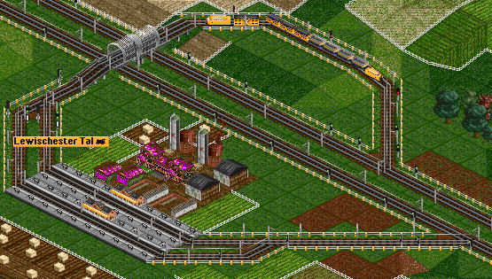
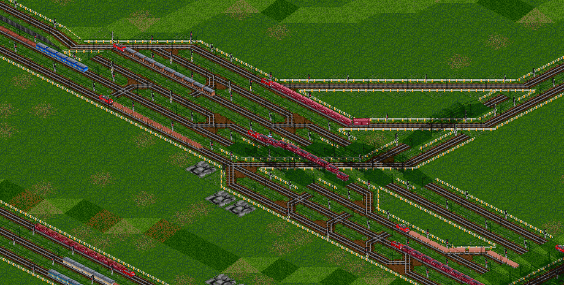

Clean building
For coop gaming there is a wiki guide about proper building and there is a tuturial save game to help you in defining the basics about building on coop servers. During recent games it appears that these guidelines are not followed optimally.

Example image taken from the guide.
Lately it seems that people join in a game and start building and when a problem arises they tend to add an extra mainline. With just adding an extra mainline the actual root cause is not solved and makes the map messier. Though if people follow the guide about proper building, this may not be the case. In the last three games there has been put a lot of effort into optimizing the network and fixing issues, due to a lack of clean building.
For instance if a drop station is jammed and you notice that your pickup location has cargo pilling up, don’t just add trains to let it pick up that cargo. You’ll get into a vicious circle: Cargo pilling up -> adding trains > more jam at drop station -> more cargo pilling up -> …
To avoid this circle during a game, here are some thoughts about fixing problems during a coop game:
- Analyze the problem and find root cause. Ask yourself questions like: is the station entry and exit fast enough, is the merger onto the mainline properly build.
- How is the general flow of the network, is it flowing properly. If not try to fix the flow first, before making a solution for a jammed station.
- Discuss with others what a good solution might be and co-operate in building the solution.
- If you all agree on a solution and the solution is adding an extra mainline, make sure you hook that up cleanly on all hubs and stations and that you make proper balancers at the point where the extra mainline ends.
What ever you do: don’t just add an extra mainline or extra trains.
Example screen shots, just taken randomly to show unclean building and clean building:

Example of a clean hook-up from a sideline into a hub, balanced over the mainlines.
[Unclean building example]
Example of an unclean hook-up in a hub. Notice not all lines are connected to exit the mainline.
Categories: Public Server, Weekly Review
planetmaker February 19, 2008 17:29
I agree mostly with what tneo writes. The main point which was lacking in the recent game(s) probably was mostly communication and therefor a lack of co-ordination.
But communication has a problem for big projects like fixing a bad flow where solutions may involve quite a couple of sub tasks – which all in all may take a decent amount of time. This is problematic, if for one reason or another, the players who started with fixing this problem leave the game before the issue is fixed in its entirety. The later was in my observation the root cause of the problems which became quite obvious in the last game tneo took the screenshots from.
In order to ensure that such project can be properly finished, the message board and / or TODO list should IMO be used more intensively. When having agreed on a major upgrade, it will help to add the plan to it and the individual subtasks, possibly with an assignment / WIP / unclaimed sign next to it.
Not sure, but maybe we should also encourage more the use of a teamspeak server? Then a general discussion about major fixed wouldn’t go as easily unnoticed as with the IRC?
tneo February 20, 2008 11:31
Good point about communication as well in game with signs as well by IRC. To play on coop games we ask from you to join in on the IRC channel, you should keep an eye on that and make sure you get highlighted. That way communication will improve as well.
I wouldn’t go as far to state, that if you don’t pay attention to IRC you shouldn’t be building, but seen the last games going it gets more and more tempting to set that requirement.
Playing on Coop is about communicating and we use IRC for that, keep an eye on the channel. 🙂
planetmaker February 20, 2008 15:00
tneo, sure, one SHOULD keep an eye on IRC. But from my personal experience, especially IF I am building, I often fail to follow the IRC passing through the game screen – as my attention is on what I’m building. Definitely I learned to like that the console keeps the chat longer accessible.
Given this argument I actually wonder whether an audio channel wouldn’t pass by me just the same 😛
XeryusTC February 25, 2008 10:36
That third paragraph so reminds me of how Ihmemies jammed an entire network.
I would like to add one thing to the entire story: if you find a jam it is often caused at where the head of the jam is, which is a join most of the time. Making bypasses is of no use as most of the time you’ll just change the location of the head.
If you find a jam there are two solutions:
a) Fix a bad joiner (station exits count as joiners too) so traffic can continue in an orderly fasion.
b) If the traffic density is too high you should look into rerouting the traffic, or possibly adding extra capacity to the line.
Note that extra capacity can also come from changing join-before-splits to the proper scenario 😉
When building people should always keep an eye on the chat, unless utter bullshit is going on. It is still useful to have IRC running in the background so you can always check it. You should also keep your OTTD windowed so you’ll notice when you’re highlighted. That way you can always respond to people trying to call you.
Station balancing at #openttdcoop February 28, 2008 16:13
[…] a follow up to the blog about Clean building we have noticed that in recent games stations frequently aren’t […]
Satya May 4, 2008 23:07
I dislike the TS idea. TS goies by in real-time. There is no scroll back. I often have to leave the keyboard, thus missing entire conversations.
IRC’s logging ability (inherent as well as explicitly logging to a file) is a superior solution to this problem.